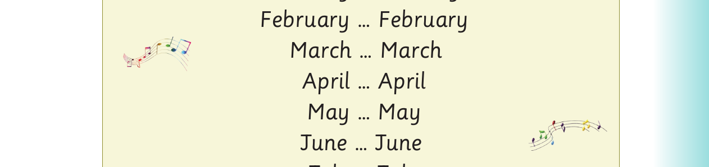

There are twelve months in the year.
January, February, March, April, May, June,
July, August, September, October, November,
and December
Now I know the twelve months of the year.
Let’s sing.
January … January

For Months of the year - song, panel 1 of 4 shows this reviewed visual content: A months-of-the-year song lists January through December in order, with musical-note decorations around the song panel. The printed labels and instructions include: February … February March … March April … April May … May June … June
February … February
March … March
April … April
May … May
June … June
July … July
August … August
For Months of the year - song, panel 2 of 4 shows this reviewed visual content: A months-of-the-year song lists January through December in order, with musical-note decorations around the song panel. The printed labels and instructions include: September … September October … October
September … September
October … October
November … November
For Months of the year - song, panel 3 of 4 shows this reviewed visual content: A months-of-the-year song lists January through December in order, with musical-note decorations around the song panel. The printed labels and instructions include: December … December What month is this? ____________________
December … December
What month is this?
____________________
There are twelve months in the year.
Let’s sing it loud for all to hear.
For Months of the year - song, panel 4 of 4 shows: A months-of-the-year song lists January through December in order, with musical-note decorations around the song panel.